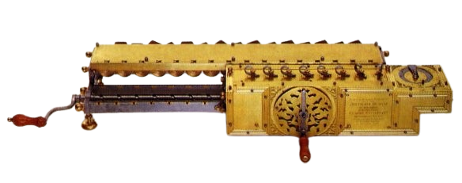

Máquina de Leibniz
Depois de Pascal, o problema foi abordado pelo matemático e filósofo alemão Gottfried Wilhelm Leibniz que elaborou mecanismos que permitiam executar essas operações por adições e subtrações sucessivas. A máquina de Leibniz foi concebida em 1673 mas construída apenas em 1694, tendo sido a primeira máquina feita com o propósito de multiplicar. Uma dessas máquinas pode ainda ser vista no Museu Kastner em Hannôver, a cidade onde Leibniz passou os seus últimos anos. Contrariamente à máquina de Pascal, a de Leibniz nunca foi comercializada embora tenha sido produzida uma segunda versão em 1704. Mais ainda que Pascal, Leibniz abriu as portas ao desenvolvimento do cálculo mecânico. No plano técnico, introduziu um número considerável de novidades: um “inscritor” que permitia colocar um número antes de o adicionar; um visor de posição; um acionador; um carro que permitia a adição e a subtração numa posição fixa, a multiplicação numa posição móvel orientada para a esquerda, e a divisão em posição móvel orientada para a direita; um sistema de tambores dentados com comprimentos crescentes deslizando cada um sobre o seu eixo e substituindo dez roldanas independentes.
  |
 |
 |